Ferals_860722
| ARCHIVE CODE | Ferals_860722 |
| INTERNAL INDEX | PC-ENT-003 |
| ACCESS LEVEL | RESTRICTED / LOCAL STATIC EXPORT |
| CLASSIFICATION | ENTITY / CONTAMINATION |
| ORIGIN TITLE | 타락 개체 분류 보고서 |
| ATTACHMENTS | 16 |
AUDIO LOG // 3f13700fff9c.mp3
타락 개체 분류 보고서
Feral Entity Classification Report
현재 보시는 정보는 관계자 외 열람이 불가능한 정보입니다
이는 관련 담당자와 함께 확인해주시기 바랍니다
본 문서는 Project Curse 세계관 내에서 확인된 괴이 개체, 페럴, 타락체, 인공 괴이, 유령형 개체, 위장형 개체, 혈액성 이동 개체를 분류하기 위한 보고서이다
해당 문서는 U.A.C, S.I.D, N.H.C, F.H.C에서 회수한 현장 기록과 생체 분석 자료를 기반으로 작성되었다
본 문서는 전체 괴이 종을 완전히 정리한 자료가 아니며, 현재까지 확인된 개체 중 일부를 제한적으로 공개한 기록이다

타락한 개체의 단순화된 분류
Simplified Classification of Corrupted Lifeforms
타락한 개체는 우시노다의 영향, 타락 의식, 혈액 의식, 인위적 실험, 또는 불명확한 초상 현상에 의해 기존 생명체가 변질된 형태를 뜻한다
본 분류표는 현장 인원이 빠르게 개체 유형을 식별하기 위한 단순화된 기준이며, 실제 개체의 위험도는 출현 장소, 지능 수준, 타락 진행도, 재생 능력, 의식 반응 여부에 따라 달라질 수 있다
본 분류는 현재까지 확보된 현장 기록과 회수 자료를 바탕으로 구성된 단순화 분류이며, 모든 개체를 완전하게 설명하지는 않는다
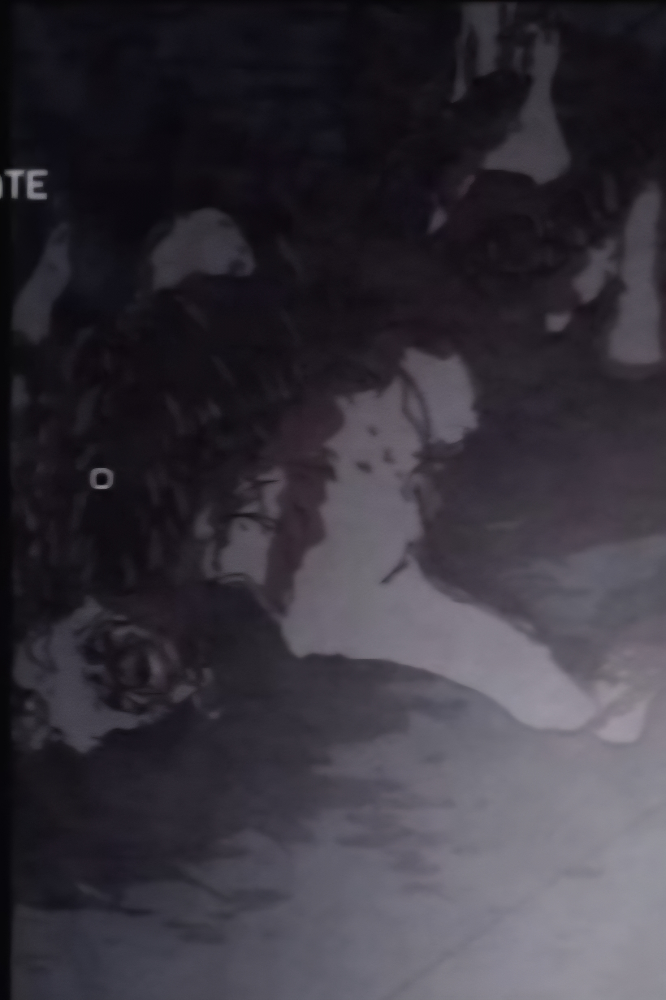
분류 구조
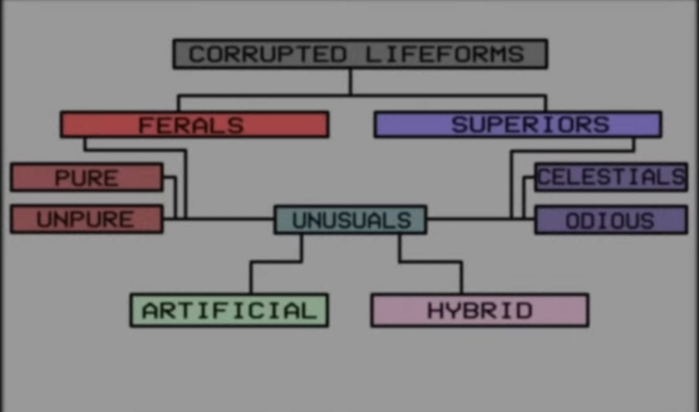
분류 기준
Ferals는 본능과 공격성이 강하게 발현된 야성형 개체를 뜻한다
Superiors는 단순한 야성체보다 높은 지능, 힘, 생존력, 초상 능력을 가진 상위 개체를 뜻한다
Unusuals는 기존 분류로 설명하기 어려운 인공체, 혼합체, 유령형, 혈액성 개체를 포함하는 이례 개체군이다
- 현재 야생에서 가장 흔하게 확인되는 타락 개체
- 기원은 불명이나 오랜 시간 존재한 것으로 확인됨
- 우시노다의 힘과 직접적인 연관이 있는 것으로 추정됨
- 신선한 고기와 피에 강한 반응을 보임
- 형태 유지 또는 복원을 위해 섭식 행동을 지속하는 경향이 있음
- 개체별로 위장, 기생, 변이, 인공 개조 등 다양한 유형이 존재함
Ferals
현 명칭 : 괴이 / 야성체
Ferals는 타락한 생명체 중 가장 본능적이고 원시적인 유형이다
현장과 일반 기록에서는 괴이라는 명칭으로 가장 널리 통용되며, 실무상 가장 자주 마주치는 분류이기도 하다
이들은 지능보다 생존 본능과 공격성이 강하게 발현된 개체로, 대부분 이성적 판단 능력을 상실했거나 매우 제한적인 사고만 가능하다
주로 인간, 짐승, 시체, 또는 저등 생명체가 타락했을 때 발생하며, 개체 수가 많고 집단으로 출몰하는 경우가 많다
Ferals 특징
- 지능이 낮거나 거의 없음
- 본능적 공격성이 강함
- 소리, 피 냄새, 움직임에 민감함
- 무리 단위로 움직이는 경우가 많음
- 명령 체계는 약하지만 특정 상위 개체를 따를 수 있음
- 화염, 절단, 혈무에 비교적 취약함
개
IMAGE-004CF
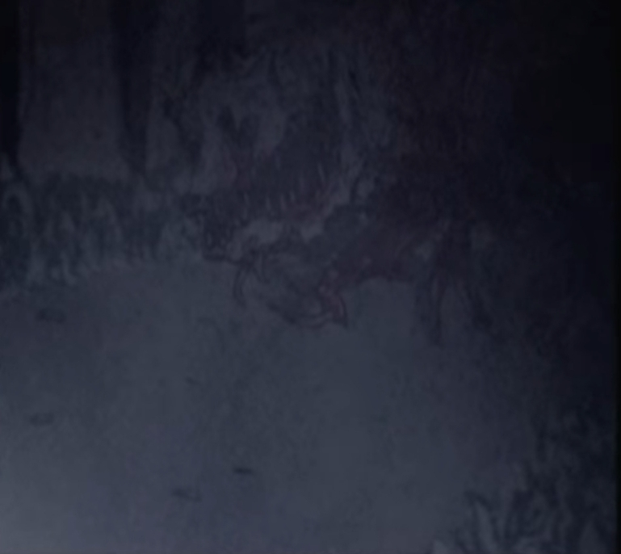
분류:Ferals / Pure
위험도:Medium
주요 출현 구역:옐로우존 / 레드존 / 숲지대 / 폐쇄 외곽 지역
개는 인간이 아닌 야생 속의 짐승이 우시노다의 힘으로부터 타락한 개체이다
대부분 다른 동물들과 동일하게 야생 활동을 하지만, 일반적인 짐승과 달리 신선한 고기와 피에 강한 집착을 보인다
이들은 불사를 유지하기 위한 본능인지, 인간과 짐승을 가리지 않고 신선한 살과 피를 섭취한다
섭취를 반복할수록 외형이 점차 안정되거나 형태를 갖추는 듯한 변화가 관찰되었다
타락에 실패한 개체
IMAGE021CF
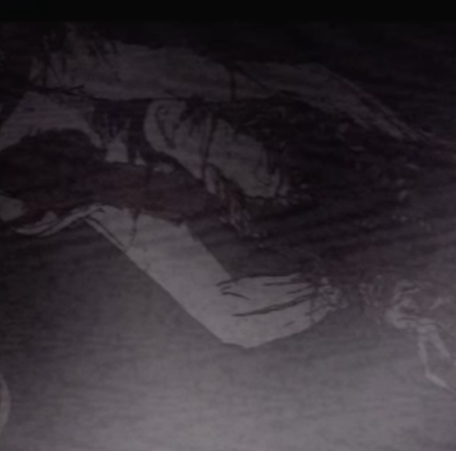
분류:Ferals / Unpure
위험도:High
주요 출현 구역:옐로우존 / 레드존 / 의식 실패 현장 / 폐쇄 건물
타락에 실패한 개체는 주로 인간이라는 생명체로부터 자주 발견된다
이들은 인간을 섭취하지 않았거나, 타락의 의식을 거부했거나, 타락 진행 과정에서 의식이 중단된 경우 발생하는 것으로 추정된다
타락이 정상적으로 완료되지 못한 개체는 예측 불가능한 경로로 자아가 붕괴하며, 공격성이 극도로 증가한다
해당 개체는 완전한 타락체보다 불안정하지만, 그만큼 행동 예측이 어렵기 때문에 매우 위험하다
위장의 잔여물
IMAGE092CF
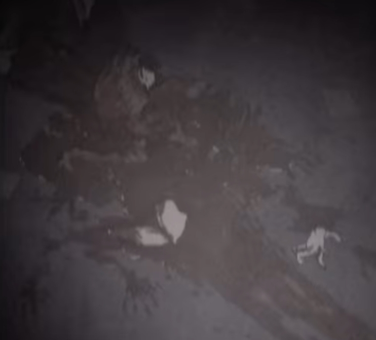
분류:Ferals / Unpure
위험도:High
주요 출현 구역:옐로우존 / 레드존 / 구조 요청 발생 지역 / 폐쇄 시설
위장의 잔여물은 인간의 몸에 기생하여 위장 또는 미끼로 사용하는 유형이다
피해자는 자신이 괴이에게 이용당하고 있다는 사실을 인지할 수 있으나, 대부분 아무것도 할 수 없는 상태에 놓인다
이 과정에서 피해자에게 극심한 고통이 유발되며, 주변 인원을 끌어들이기 위한 미끼로 활용된다
해당 개체는 생존자 구조 상황에서 가장 큰 혼란을 유발한다
미믹
IMAGE203CF
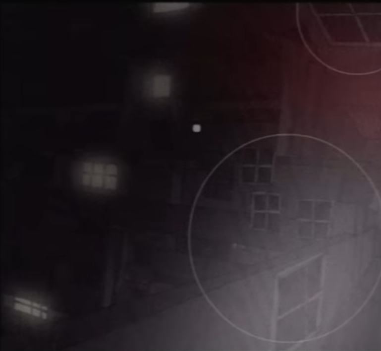
분류:Ferals / Unpure
위험도:Medium ~ High
주요 출현 구역:그린존 / 옐로우존 / 화이트존 / 폐건물 / 실내 공간
미믹은 건물의 창문, 표지판, 가구, 구조물 등으로 변하여 활동하는 위장형 괴이이다
처음부터 인지하기 어려우며, 주변 환경과 거의 동일한 형태를 띠기 때문에 육안 식별이 매우 어렵다
이를 구별하는 방법은 잘못된 위치에 존재하는 구조물, 현실적으로 맞지 않는 배치, 반복되는 형태, 주변 공간과 어긋난 그림자 등을 확인하는 것이다
Superiors
상위체
Superiors는 단순한 야성체보다 높은 지능, 힘, 생존력, 또는 초상 능력을 가진 타락 개체다
이들은 인간 수준 이상의 판단 능력을 유지하거나, 특정 목적을 가지고 행동하는 경우가 있다
일부 상위체는 타락교나 혈교의 보호를 받거나, 반대로 이들을 지배하는 존재로 취급되기도 한다
Superiors는 현장에서 즉시 고위험 대상으로 분류된다
Superiors 특징
- 높은 지능 또는 전술적 판단 능력 보유
- 강력한 신체 능력
- 재생 능력 또는 불멸성 보유 가능
- 의식장 중심부에서 발견되는 경우가 많음
- 하위 개체를 통제하거나 유도할 수 있음
- 단독으로도 부대급 피해를 유발할 수 있음
가면을 쓴 존재
IMAGE0321

분류:Superiors / Celestials
위험도:High
주요 출현 구역:의식장 / 성소 / 레드존 / 타락교 거점
가면을 쓴 존재는 타락교의 보호를 받는 특수한 괴이 개체이다
해당 존재는 본래 야생의 짐승이었으나, 우시노다의 타락의 힘에 의해 변형된 것으로 추정된다
타락교는 이 개체를 단순한 괴물이 아닌 종교의 상징이자 신성한 동물로 숭배한다
일부 지역에서는 이 존재가 타락교 의식의 중심에 배치되며, 신자들이 이를 보호하기 위해 목숨을 바치는 사례도 확인되었다
새로운 존재
IMAGE430CF
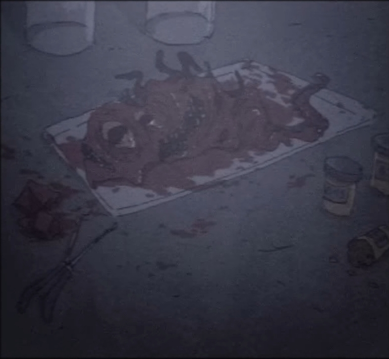
분류:Superiors / Odious
위험도:High ~ Extreme
주요 출현 구역:레드존 / 의식장 / 폐쇄 시설 / 블랙존 후보 지역
새로운 존재는 타락의 의식에 쓰이던 여성의 몸에서 태어난 개체이다
외형은 무언가가 뒤섞인 듯한 모습을 하고 있으며, 인간, 괴이, 타락체의 특징이 동시에 나타나는 것으로 보고되었다
해당 개체는 자연 발생 괴이가 아니라 의식 과정에서 만들어진 의식 탄생형 개체로 분류된다
정확한 성장 속도와 지능 수준은 확인되지 않았으며, 안정된 형태를 가진 개체인지조차 불분명하다
Unusuals
이례체
Unusuals는 Ferals나 Superiors 어느 한쪽으로 명확히 분류하기 어려운 특수 개체다
이들은 일반적인 타락 생명체의 기준에서 벗어난 존재들로, 인공적으로 제작되었거나, 두 개 이상의 생명체 또는 타락 원리가 결합된 형태일 가능성이 높다
현장에서는 Unusuals를 단순한 예외 개체가 아니라, 새로운 재난 유형의 징후로 간주해야 한다
Unusuals 특징
- 기존 분류 기준으로 설명하기 어려움
- 외형, 능력, 행동 양식이 불규칙함
- 실험, 의식, 융합, 인공 제작과 관련될 가능성이 있음
- 지능 수준이 개체마다 크게 다름
- 연구 가치가 높지만 현장 위험도도 높음
- 생포 시도는 고위 승인 없이는 금지됨
오토마톤
IMAGE032HF
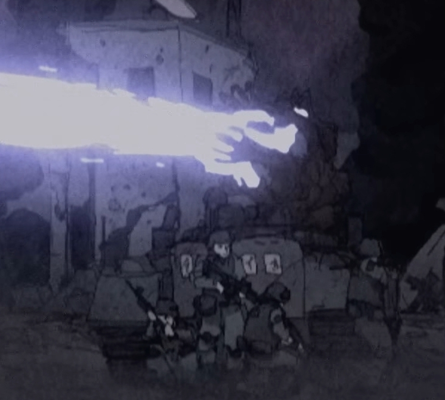
분류:Unusuals / Artificial
위험도:통제 상태에 따라 변동
주요 운용 구역:레드존 / 블랙존 외곽 / N.H.C 작전 구역
오토마톤은 괴이들을 부적으로 봉인시킨 육체 형태의 인형이자 강력한 화력 수단이다
탱크라는 이동수단을 이용하며, 부적으로 발포 범위와 화력을 조정한다
내부에 봉인된 인형을 불태우며 발생하는 강력한 불을 화염방사기의 방식으로 발사하여 괴이에게 큰 피해를 입힐 수 있다
오토마톤은 일반 괴이가 아니라, 괴이를 억제하거나 제압하기 위해 제작된 인공 전투형 개체 또는 병기형 도구로 분류된다
부적
IMAGE02200
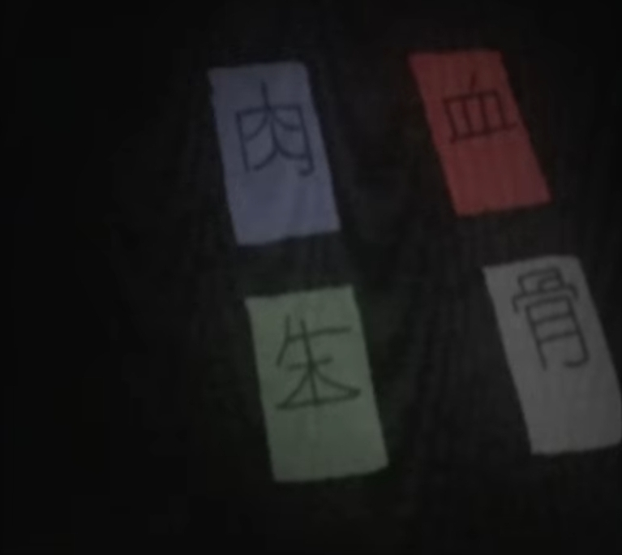
분류:Unusuals / Artificial Support Object
위험도:통제 상태에 따라 변동
주요 사용 구역:그린존 제한 구역 / 오토마톤 운용 구역 / 봉인 지점
부적은 다양한 마법 및 주술의 효과를 지닌 도구이다
오토마톤의 작동 및 증폭에 중요한 역할을 하며, 봉인, 화력 조정, 괴이 억제, 공간 안정화 등에 사용되는 것으로 추정된다
부적이 배치된 장소는 관련자 외 출입 금지 구역으로 간주된다
인공 미믹
IMAGE354CF
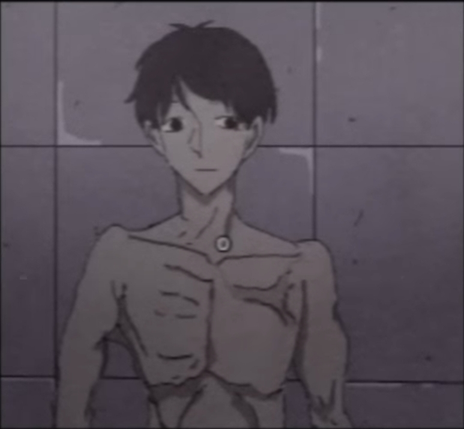
분류:Unusuals / Artificial
위험도:Low ~ High
주요 출현 구역:연구 시설 / F.H.C 격리 시설 / 비인가 실험장
인공 미믹은 인공적 괴이, 즉 Artificial Feral로 분류된다
기존 미믹을 활용하여 만든 더미 형태의 개체로 보이지만, 현재까지 실전 활용 가능성은 낮은 것으로 확인된다
다만 다양한 방법으로 미믹의 위장 방식을 연구하고 탐색 방법을 찾아내는 데 활용되고 있다
해당 개체는 괴이 대응 연구의 부산물이거나, 비인가 생체 기술 실험의 결과물일 가능성이 있다
죽음으로부터 태어난 그림자
IMAGE010CF
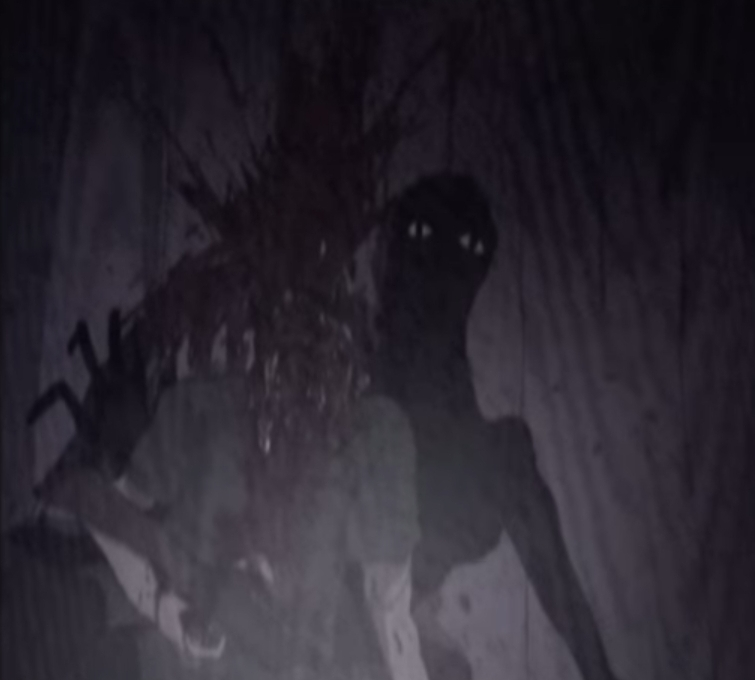
분류:Unusuals / Hybrid
위험도:High
주요 출현 구역:화이트존 / 옐로우존 / 폐가 / 자살 사건 현장 / 의식장
죽음으로부터 태어난 그림자는 특별한 종으로 분류되며, 유령형 괴이와도 연결되는 개체이다
이 종류 또한 우시노다의 힘, 타락, 사망자 잔류 현상으로 인해 태어난 존재로 추정된다
이들의 활동 방식은 숙주를 미치게 만들거나, 자살하게 만들거나, 살해당하게 유도한 뒤 죽은 육체에 기생하는 방식이다
육체를 확보한 뒤에는 해당 시신을 매개로 활동하거나, 주변 인물에게 추가적인 정신 오염을 유발한다
유령
IMAGE030CF
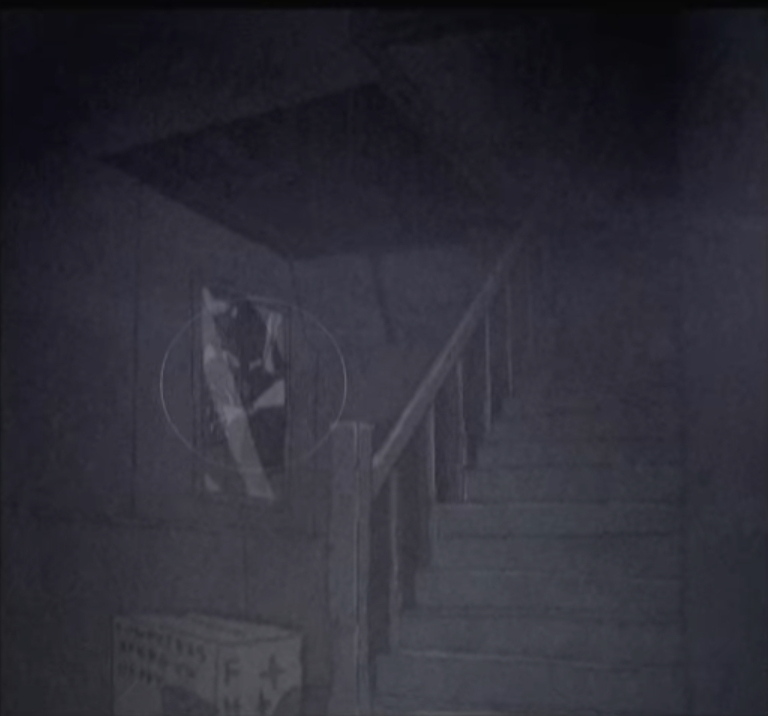
분류:Unusuals / Hybrid
위험도:High
주요 출현 구역:화이트존 / 폐쇄 건물 / 사망 사건 현장 / 오컬트 의식장
유령은 위장에 탁월한 기능을 지닌 괴이 유형이다
눈으로 감지할 수 없는 유형이 대부분이며, 어떤 반사 효과나 특수한 장치를 이용해야만 관찰할 수 있다
유령 타입의 괴이는 많이 존재하지 않지만, 발견된 사례 대부분이 높은 위협성을 보인다
직접적인 물리 공격보다 정신 오염, 음성 유도, 사망자 잔류 현상과 연결되는 경우가 많다
피호수인
IMAGE454CF
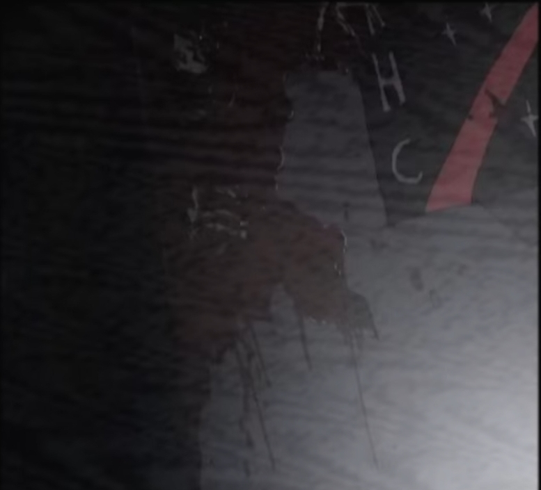
분류:Unusuals / Hybrid
위험도:Extreme
주요 출현 구역:레드존 / 피의 호수 주변 / 하수시설 / 지하 통로 / 블랙존 후보 지역
피호수인은 Blood Laker라는 이름으로 분류된 괴이이다
핏물을 통해 순간이동 또는 고속이동이 가능하며, 하수시설을 통해서도 이동할 수 있기 때문에 도시에 있어 매우 위험한 개체로 분류된다
이 개체는 단순한 혈교 신자가 아니라, 피의 호수 또는 대규모 혈액성 잔류물과 연결된 괴이형 개체로 추정된다
혈액 웅덩이, 하수도, 피의 호수 주변에서 목격될 경우 즉시 N.H.C 투입이 권장된다
현장 대응 지침
공통 지침
- 인간형 외형을 안전 신호로 판단하지 말 것
- 구조 요청자는 생체 반응 검사 후 접촉할 것
- 혈액성 잔류물은 단순 혈흔으로 판단하지 말 것
- 위장형 개체는 환경의 어긋남으로 식별할 것
- 유령형 개체는 육안 확인만으로 판단하지 말 것
- 의식장 발견 시 즉시 S.I.D에 보고할 것
- 괴이 다수 출현 시 N.H.C 투입을 요청할 것
- 사체 및 조직 샘플은 F.H.C 또는 U.A.C 생체 분석 부서로 이관할 것